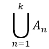
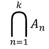
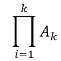

| № | Определение | Обозначение |
| 1.1 | А ⊃ В означает: множество А содержит множество В. | ⊃ |
| 1.2 | Знак принадлежности; α ∈ А означае: элемент α принадлежит множеству А. | ∈ |
| 1.3 | Знак содержания для элементов; А ϶ α означает : множество А сожержит элемент α. | ϶ |
| 1.4 | Знак непринадлежности ; α ∉ А означает : элемент α не принадлежит множеству А. | ∉ |
| 1.5 | Объединение двух мнножеств А и В. | А ∪ В |
| 1.6 | Пересечение двух множеств А и В. | А ⋂ В |
| 1.7 | Объединение множеств А1 ,..., Аk. |  |
| 1.8 | Пересечение множеств А1 ,..., Аk. |  |
| 1.9 | Разность множеств А и В. | А \ В |
| 1.10 | Пустое множество. | ∅ |
| 1.11 | Множество элементов x, обладает свойтсвом φ (х). | {x|φ(x)} или {x:φ(x)} |
| 1.12 | Декартово произведение множеств А и В. | A×B |
| 1.13 | Декартово произведение множеств А1 ,..., Аk. |  |
| 1.14 | Мощность множества А. | card A |
| 1.15 | Размерность пространства Х . | dim X |
| 1.16 | Норма элемента x. | ||x|| |
| 1.17 | Граница (контур) множества А. | Fr A |
| 1.18 | Множество внутренних точек множества А. | Int A |
| 1.19 | Раньше; предшествует. | ≺ |
| 1.20 | Позже; следует за. | ≻ |
Теория Вероятнстей